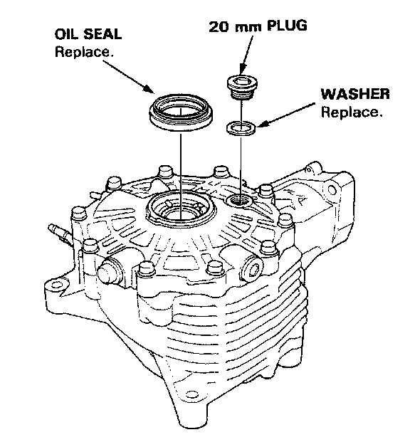
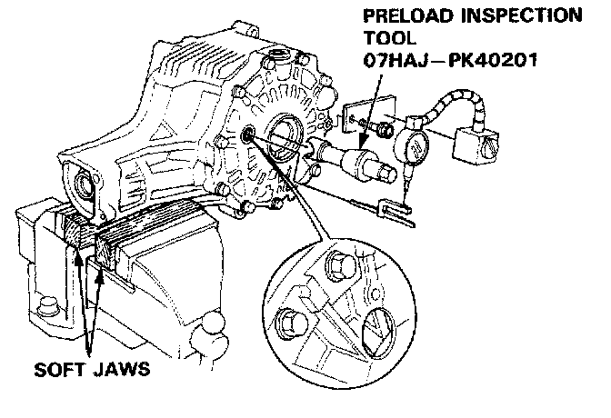
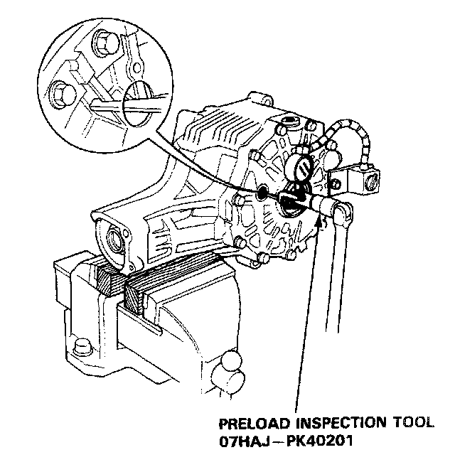
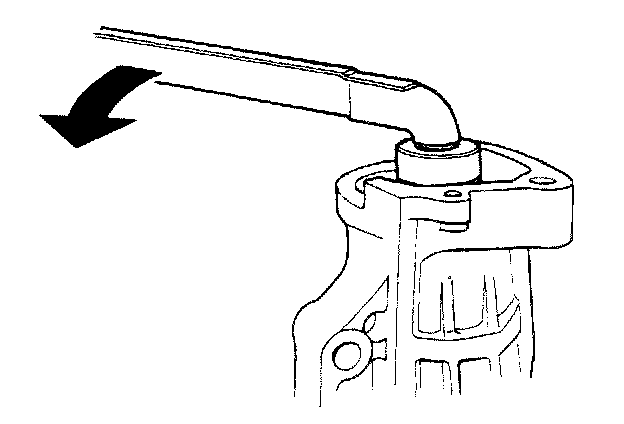
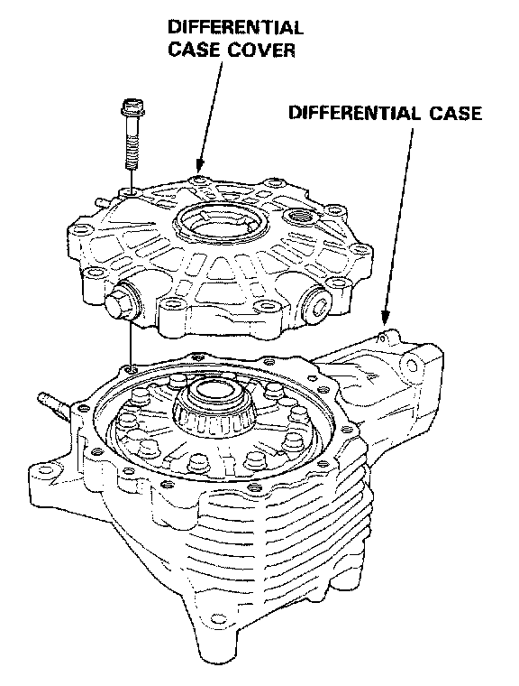
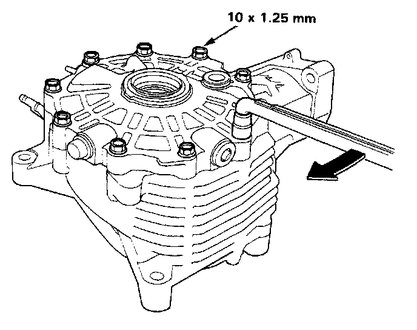
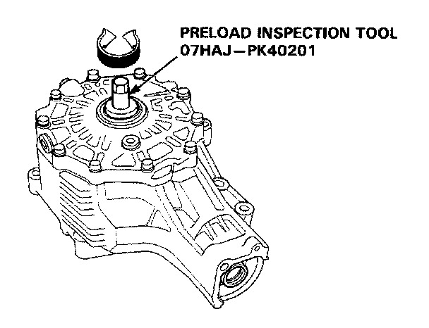
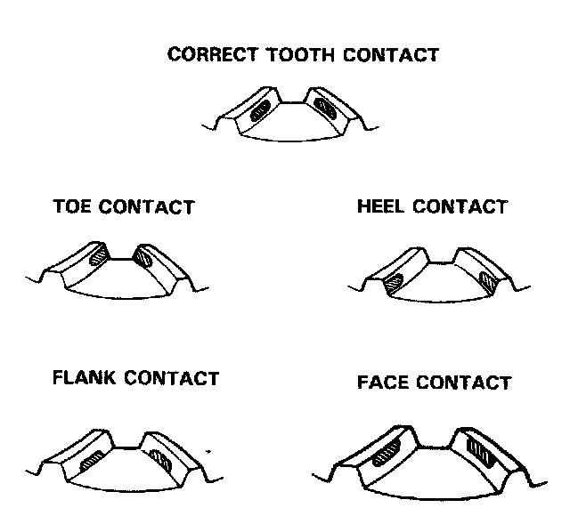

Inspection
Note that this procedure must be followed prior to disassembly of the differential unit. Make sure unit is at room temperature prior to inspection and record all measurements as these will be needed for reassembly.
1. Remove the 20mm plug and oil seal.
2. Secure the differential assembly in a vise using soft jaws.

3. Align a differential carrier rib with the 20mm plug hole and install special tools as shown above.

4. Measure the backlash in 3 - 4 places on the differential carrier using the special tools as shown above. Backlash should be 0.04 - 0.10mm (0.0016 - 0.0039 in) and the difference between the 3 - 4 measurements must not exceed 0.04mm (0.0016 in).

5. Use a dial-type torque wrench on the pinion shaft to measure the total preload. Preload should be 1.56 - 2.20 Nm (13.6 - 19.0 lb-in).

6. Remove the differential case cover. Clean and pain the ring gear teeth lightly and evenly with Prussian Blue on both sides of each tooth.

7. Reinstall the differential case cover. Torque the bolts in a criss-cross pattern to 48 Nm (35 ft.lbs).

8. Install the special tool as shown above.
9. Rotate the gear one full turn in both directions while applying resistance to the pinion shaft.

10. Remove the differential case cover and check the tooth contact pattern.